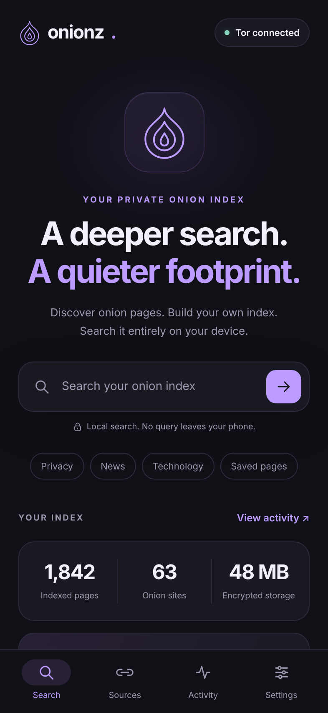
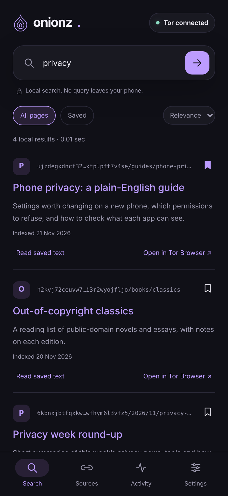
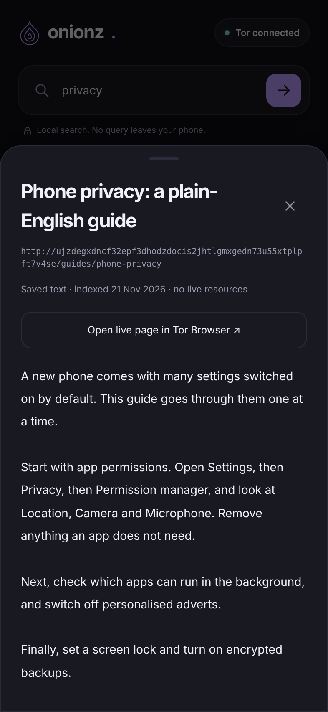
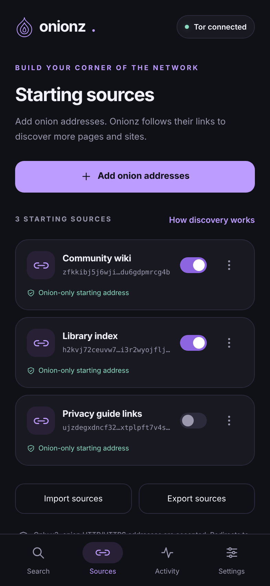
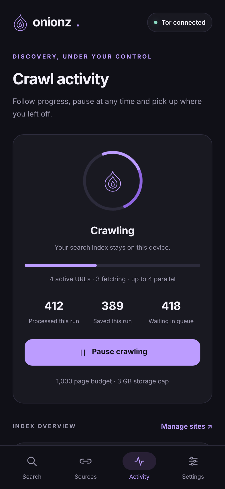
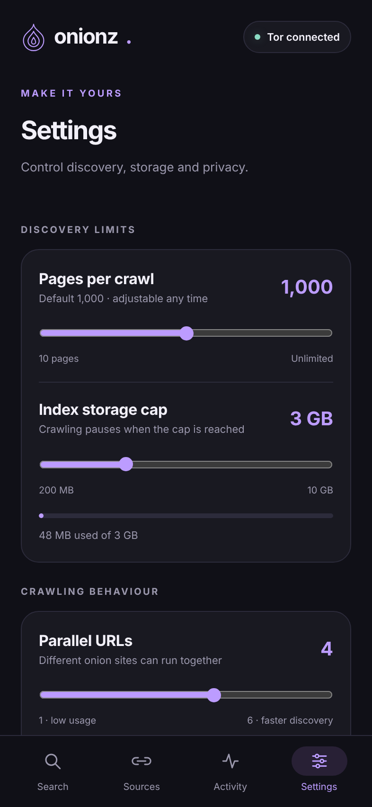

Search onion sites without telling a search company
Onionz visits onion sites over Tor and builds a search index of their text on your phone. Then you search that index, and nothing leaves the phone.
You choose where it starts. It follows links from there, at a polite pace, and keeps everything encrypted.
Beta. Onionz is in beta. It has not had an independent security audit, and no app can promise complete anonymity.
Some onion sites and some uses of them are against the law. What the law says
- Version 0.2.0 beta 1
- Android 10 or later
- 13 MB
- Beta
Free, with nothing to unlock. No adverts, no account with the developer, no tracking. Compare or read the release notes.
Chrome may say the file might be harmful. It shows this for app files that do not come from Google Play. Choose Download anyway.

- Search stays on the phoneSearching makes no network requests at all.
- Tor built inNo other app needed to crawl.
- Encrypted indexLocked with a key kept in Android's keystore.
- No accounts or advertsNothing to sign up for.
A look inside
These are the real screens, drawn from the app's own interface with made-up sites and pages. Swipe or scroll sideways to see them all.





How it works
There is no search company in the middle. Your phone does the finding and the searching.
Choose where to start
Onionz comes with three published onion directories, and you can add your own addresses.
Let it crawl
It connects to Tor, visits those sites, follows their links to other onion sites, and saves the text of each page in an encrypted index.
Search privately
Type a search. Onionz looks only in the index on your phone, so no one sees what you searched for.
Everything is in, and all of it is free
Nothing below is held back for a paid tier, because there is no paid tier.
Finding
- Tor built in
- Onionz runs its own Tor connection. Orbot is not needed.
- Onion sites only
- Normal websites and redirects to them are blocked.
- Polite crawling
- Obeys robots.txt and waits between requests to each site.
- Several at once
- Up to six different sites at a time, four by default.
Searching
- Proper search
- Ranked results, phrases in quotes, words to leave out, and one site at a time.
- Saved text reader
- Read a page as text, with no images or scripts.
- Bookmarks
- Keep the pages you want to come back to.
Control
- Limits
- Pages per crawl from 10 to unlimited, and a storage cap from 200 MB to 10 GB.
- Pause any time
- The queue is kept, so you pick up where you left off.
- Background or not
- Off by default. Optional refresh while charging on Wi-Fi.
Privacy
- Encrypted index
- Pages, sources, queue and bookmarks are all encrypted.
- App lock
- Optional PIN or fingerprint.
- No screenshots
- Screenshots and recent-app previews are blocked.
Your searches are your business
No search company
Searches run on the phone and are never sent anywhere.
No servers of ours
No accounts, no analytics, no adverts and no tracking.
Encrypted at rest
The index is encrypted and is not included in phone backups.
Use it within the law
Onion sites are reached over Tor. Most are lawful, but some are not. What you search for, open, download and do is your responsibility.
- Computer Misuse Act 1990. Getting into computers or data without permission, or making or supplying tools to do so, is a crime.
- Investigatory Powers Act 2016, as it applies to users. Using Tor is lawful in the UK, but it does not put you outside the law. Intercepting other people's communications without lawful authority is an offence.
- Protection of Children Act 1978 and Criminal Justice Act 1988, section 160. Making, downloading, keeping or sharing indecent images of children is a serious crime, wherever they are found. Report it to the Internet Watch Foundation at iwf.org.uk.
- Misuse of Drugs Act 1971. Buying, selling or supplying controlled drugs is a crime, including through an onion site.
- Fraud Act 2006. Buying or using stolen card details, accounts or identities, or tools made for fraud, is a crime.
- Terrorism Act 2006. Collecting, sharing or encouraging terrorist material is a crime.
Laws differ in other countries. If you are not in the UK, the rules where you are apply. Read the terms of use.
Installing and updating
Onionz is not on Google Play, so your phone asks a couple of extra questions the first time.
Download the app file
Tap Download on your phone. The file is called Onionz.apk and is about 13 MB. If Chrome says the file might be harmful, choose Download anyway. First tick the box to say you will use the app within the law.
Allow the install
Open the file. The first time, Android asks you to allow your browser to install apps. Allow it, go back and tap Install. If Google Play Protect steps in, choose More details, then Install anyway.
Updating later
Onionz tells you when a newer version is out. Install the new file over the old one and everything you have saved is kept.
Version 0.2.0 beta 1, released 21 November 2026. See the release notes, or check your download.
Questions
Is Onionz free?
Yes. There is no paid version, no subscription and no adverts.
Does it come with an index?
No. It starts empty. The starting sources are where it begins looking, not ready-made results. The first crawl can take a while, as Tor is slow.
Can websites tell I'm using it?
Onion sites can see that a crawler is visiting, because Onionz says so. They cannot see your search.
How do I open a live page?
Onionz shows the saved text. To open the live page, it hands the address to the official Tor Browser, which you install separately.
What happens if I uninstall it?
The index is deleted with the app. It cannot be recovered.
Is it on Google Play?
No. It is downloaded from this site as an Android app file. It needs Android 10 or later.
Your own index of the onion web
Free, with no adverts and nothing to unlock. Made by the developer of several other free Android apps: see them all.